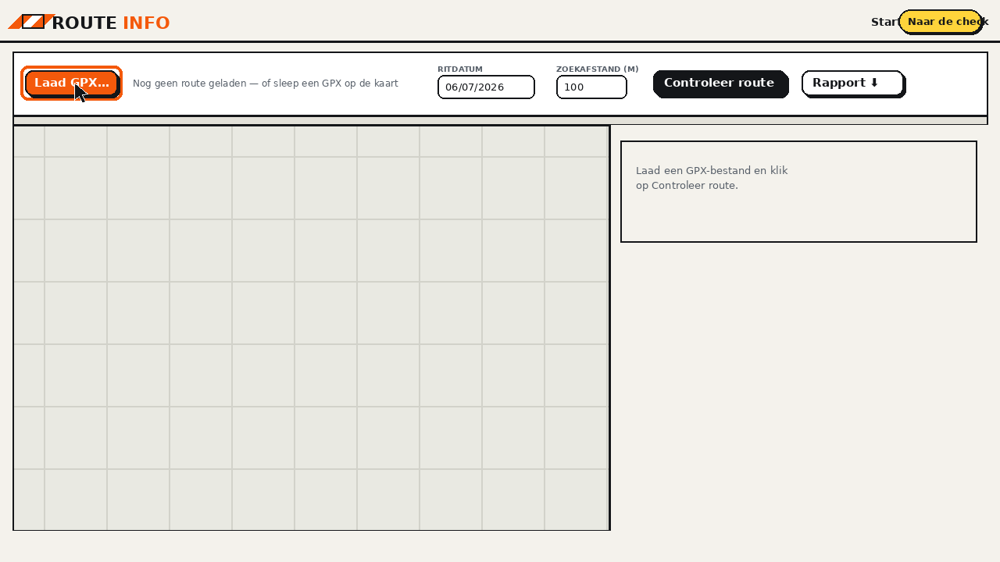
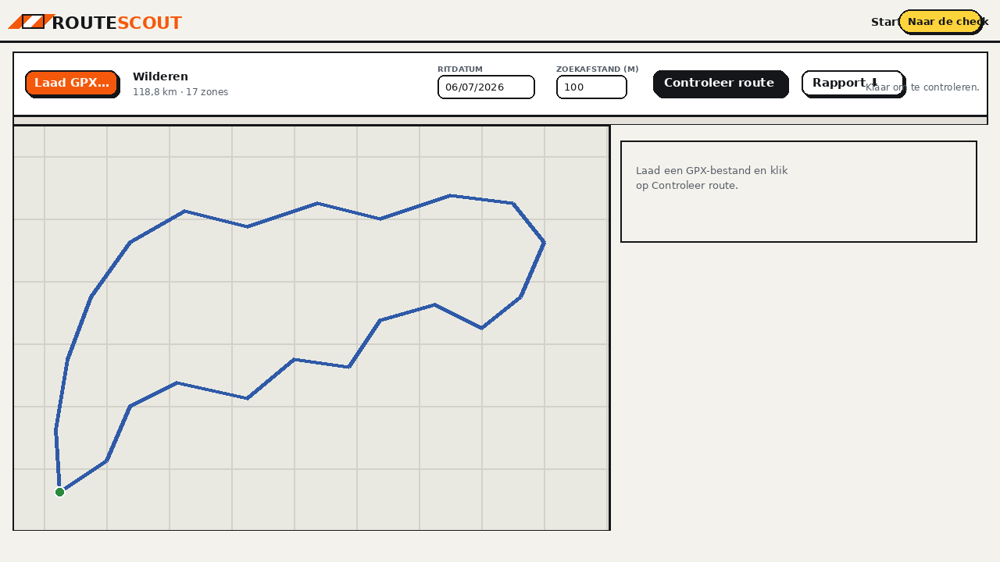
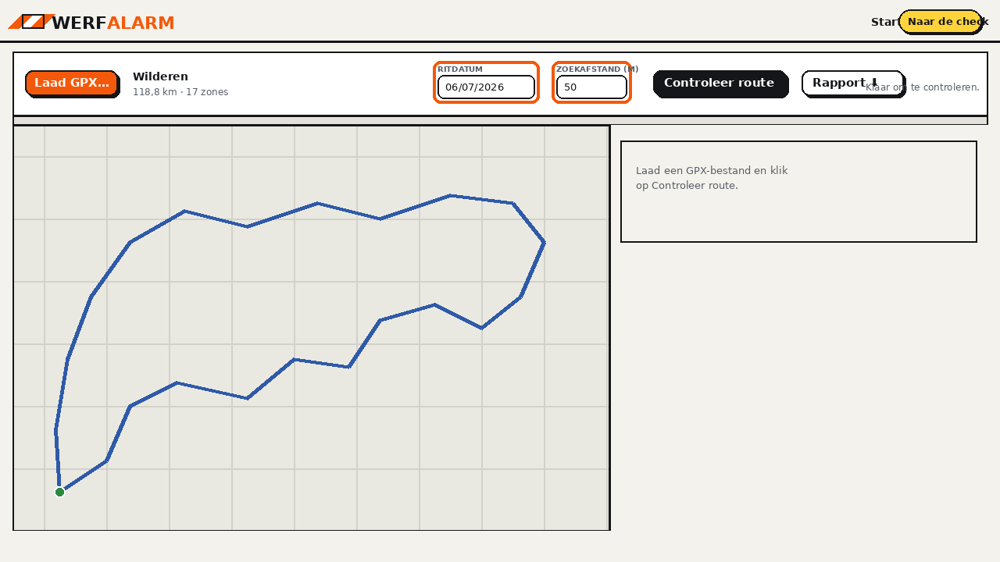
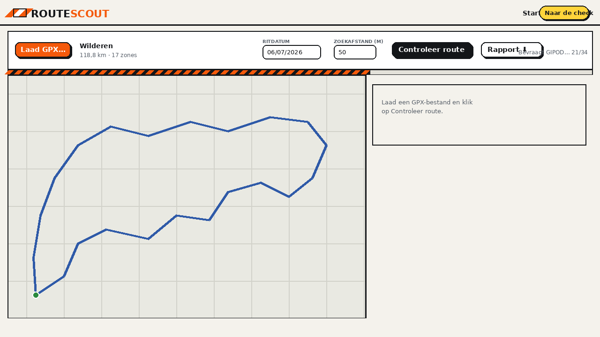
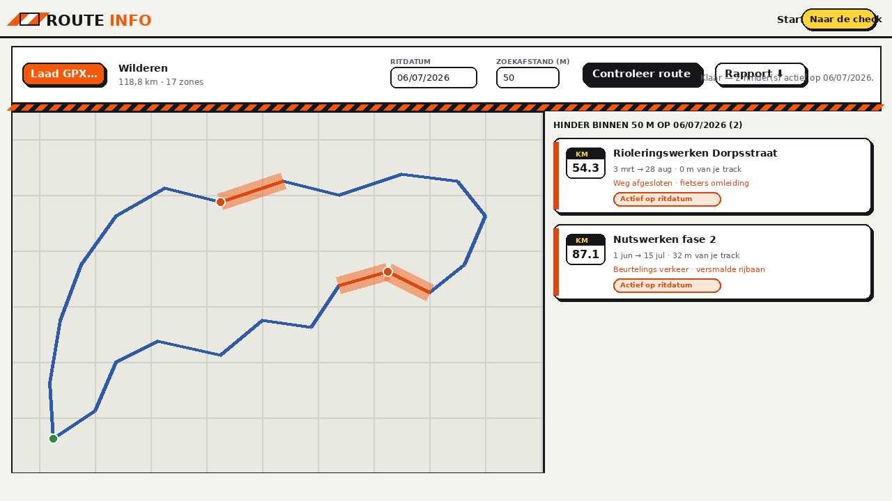
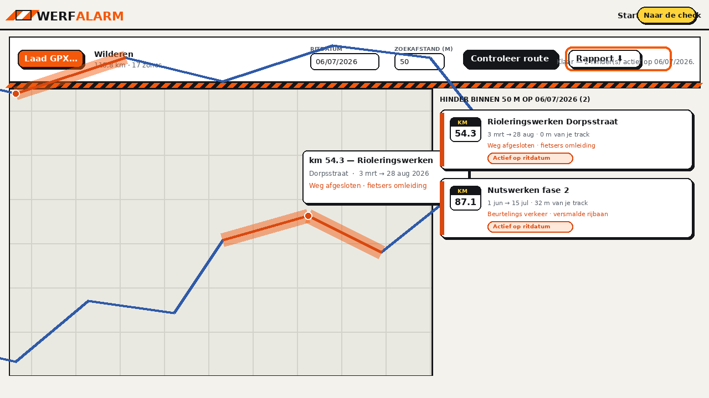

DE GIDS.
In een halve minuut zie je hieronder de volledige werkwijze. Daaronder vind je elke stap in detail, met schermafbeeldingen en tips om het meeste uit je hindercheck te halen.
Instructievideo (33 s, zonder geluid — alle uitleg staat in beeld). De beelden zijn een weergave van de app; kleuren en indeling komen overeen met wat je op je eigen scherm ziet.
Laad je route
Klik op Laad GPX… links in de werkbalk en kies je routebestand, of sleep het GPX-bestand gewoon op de kaart. WerfAlarm leest tracks van Komoot, Strava, Garmin, RideWithGPS en elke andere app of fietscomputer die GPX exporteert.
Zodra de route is ingeladen zie je het blauwe spoor op de kaart verschijnen, met een groene stip op het startpunt. In de werkbalk lees je de naam van je route, de totale afstand en in hoeveel zones we ze opdelen om de databank efficiënt te bevragen.


Kies datum & zoekafstand
Stel bij Ritdatum in wanneer je rijdt. WerfAlarm toont daarna énkel hinder die op die dag actief is — werken die eerder aflopen of pas later starten, worden weggelaten. De databank kijkt tot ongeveer zes maanden vooruit, dus ook je toertocht van volgende maand kan je nu al checken.
Met Zoekafstand (m) bepaal je hoe ver naast je track we kijken:
- 0 m — de strengste stand: enkel werven die je track zélf raakt of kruist.
- 20–50 m — aanrader voor de racefiets: ook werken vlak naast de rijbaan tellen mee.
- 100–250 m — ruime blik, handig als je onderweg wil kunnen uitwijken naar parallelwegen.

Controleer je route
Klik op Controleer route. WerfAlarm bevraagt nu rechtstreeks de open GIPOD-databank van de Vlaamse overheid — dezelfde bron als Hinder in kaart op geopunt.be — voor élke zone langs je track. De gestreepte balk toont de voortgang; bij een route van ±120 km duurt dit doorgaans maar enkele seconden.
Er wordt gezocht in twee lagen tegelijk: de gevalideerde hinder (met gevolgen zoals “weg afgesloten”) én de innames (geplande werken). Dubbels over dezelfde werf voegen we automatisch samen.

Lees het resultaat
Elke gevonden werf verschijnt als kaartje in de rechterkolom, gesorteerd op kilometerpunt, en als oranje wegvak op de kaart — precies de wegen die getroffen zijn, zoals op Hinder in kaart. Op elk kaartje lees je:
- KM-badge — op welk punt van jóuw route de werf ligt (handig voor je bidonplanning);
- omschrijving en periode — wat er gebeurt en van wanneer tot wanneer;
- afstand tot je track — 0 m betekent: je rijdt er dwars doorheen;
- gevolgen — ingrepen zoals weg afgesloten of fietsers omleiding worden geel gemarkeerd: dáár moet je mogelijk hertekenen.
Klik op een kaartje en de kaart zoomt naar het getroffen wegvak, met een pop-up met alle details. Met Rapport ⬇ download je een deelbaar overzicht met kaartje en alle details — handig voor de clubchat — en met GPX + werven ⬇ krijg je je route terug mét een waarschuwingspunt op elke werf, zichtbaar op je Garmin of Wahoo.


Goed om te weten
Hoe betrouwbaar en actueel is de data?
WerfAlarm bevraagt live de open GIPOD-databank — het officiële register waarin steden, gemeenten en nutsbedrijven innames van de openbare weg in Vlaanderen registreren. Je ziet dus exact dezelfde informatie als op geopunt.be/hinder-in-kaart, op het moment dat jij controleert. Kleine, niet-geregistreerde of last-minute werken kunnen ontbreken; de databank kijkt tot ±6 maanden vooruit.
Werkt dit ook buiten Vlaanderen?
Nee — GIPOD dekt enkel Vlaanderen. Stukken route door Brussel of Wallonië komen leeg terug: dat betekent “geen data”, niet “geen wegenwerken”.
Waarom zie ik soms een zone die breder lijkt dan de straat?
De vorm komt rechtstreeks van de aannemer of gemeente die de werf intekende. Meestal is dat netjes langs de weg, maar soms is het een ruwe cirkel of rechthoek rond de werfzone. Bekijk in dat geval de pop-up: de omschrijving en gevolgen vertellen je wat er écht aan de hand is.
Wordt mijn route ergens opgeslagen?
Nee. Je GPX wordt volledig in je eigen browser verwerkt; enkel de kaartuitsnedes (zones) worden als zoekvraag naar de open databank gestuurd. Er is geen account en er wordt niets bewaard.